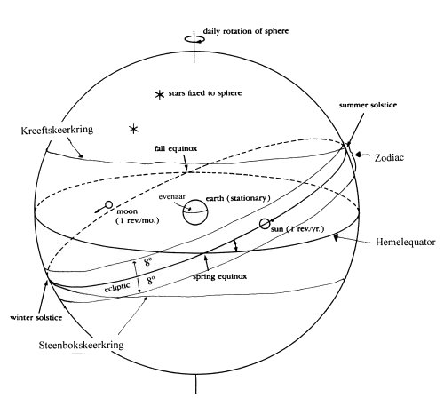
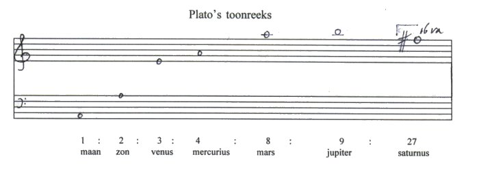
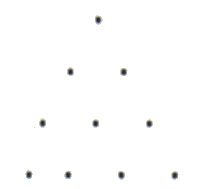

Inhoudsopgave
De Harmonie der Sferen Inhoudsopgave
De Harmonie der Sferen  Griekse Muziekale
Astronomie Griekse Muziekale
Astronomie
Plato’s ‘Muziek der Sferen’
De oudste bronnen voor de ‘Harmonie der Sferen’
zijn Plato’s werken Timaeus en Staat. Uit de getallen die
Plato (427-347 v.c.) de Demiurg (δημιουργόσ- lett. ‘handwerksman’, fig.
‘Schepper’ - ‘God’) in de Timaeus (35B) laat
gebruiken als onderdeel van de constructie van de kosmos, kan een toonladder
worden afgeleid waarin de ideale afstanden tussen de verschillende
hemellichamen ‘klinken’. In de Timaeus is echter nog geen
sprake van de ‘muziek der sferen’. Dat idee is afkomstig uit een
andere bron, namelijk de mythe van Er aan het einde van de Staat. Ik zal
beide achtereenvolgens behandelen.
In de dialoog Timaeus laat Plato zijn fictieve
personage, de pythagoreeër Timaeus uit Locrië (een plaats in Magna
Graecia, de Griekse kolonie in Zuid-Italië), vertellen hoe de
Handwerksman (δημιουργόσ) de wereld tot stand bracht. Deze vertelling
verloopt ongeveer als volgt.
Omdat de Handwerksman (door Plato ook God, θεός, genoemd) volkomen goed is, en slechts
het goede wil, schiep(1) hij
één en slechts één volmaakt goed universum (31A-B),
als een levend wezen (29E-30C), met een volmaakte vorm, de bol, en een
volmaakte beweging, roterend om zijn eigen as; dus cirkelvormig bewegend
(33B-34B). Dit levende wezen dat al het leven in zich bevat (33B), bestaat
enerzijds uit stof (in de vereniging van de vier elementen, 31B-33B),
anderzijds uit geest, de ‘wereld-ziel’.
De wereld-ziel bestaat uit drie elementen, namelijk Bestaan, Gelijkheid en
Verschil; deze drie, die gescheiden waren, werden tot een eenheid gebracht.(2) Want de Handwerksman dwong Verschil
met kracht tot een band met Gelijkheid (in de wereld-ziel bestaat dus
harmonia!) en smeedde deze vervolgens met de hulp van Bestaan tot
één geheel (35A). Daarop mat hij op de zo ontstane eenheid een aantal delen
af (35B); uit deze verdeling kunnen de intervallen van een toonladder worden
afgeleid.
De drieëenheid van Bestaan, Gelijkheid en Verschil
(bijvoorbeeld te vergelijken met een stuk platgehamerd metaal), met de daarop
afgemeten intervallen, sneed de Handwerksman daarna over de lengte doormidden,
en legde de twee helften in de vorm van de letter chi (C), waarna hij de uiteinden naar
elkaar boog waardoor twee cirkels ontstonden.
Vervolgens bracht hij beide cirkels in beweging, de beweging van de binnenste
cirkel noemde hij ‘beweging van Verschil’ en deze liep diagonaal
van rechts naar links, de buitenste (‘beweging van Gelijkheid’)
echter horizontaal van links naar rechts (36B-C). De buitenste cirkel liet hij
verder met rust, maar de binnenste verdeelde hij in zeven cirkels van ongelijke
grootte (36C-D). Op deze wijze construeerde de Handwerksman, of God, de
kosmos.
De buitenste cirkel (‘Gelijkheid’) kan gelijk worden gesteld met de
hemelequator (de snijcirkel van het vlak door de evenaar van de aarde met de
hemelbol) en daarmee aan de sterrenhemel, die inderdaad van links naar rechts,
oftewel van Oost naar West beweegt.
De binnenste cirkel (‘Verschil’) kan worden gelijkgesteld met de
zodiac (dierenriem), een denkbeeldige gordel van 8 graden aan weerszijden van
de ecliptica (de baan die de zon in één jaar aflegt langs de
hemelbol, wanneer men de aarde in rust denkt - dus een schijnbare
beweging).
|  afb. 1 ‘PlatoÂs
kosmologie uit: David C. Lindberg, The Beginnings of Western Science.
Chicago/London, The Univ. Of Chic. Press, 1992.p. 43 | | De planetenbanen (maar ook
die van zon en maan) bevinden zich in de cilin- der die van de zodiac kan
worden voorgesteld; de planeten, zon en maan bewegen dus langs de tekens van de
dierenriem (de sterrenconstellaties Ram, Stier etc. die zich in de
‘buitenwand’ van deze cilinder bevinden), een gegeven dat niet on-
belangrijk in de astrologie schijnt te zijn.
De planeten, zon en maan
bewegen zich van West naar Oost aan de hemel en bevinden zich in de zeven
kleinere cirkels die de Handwerksman van de binnenste cirkel maakte (zie afbeelding 1).(3) |
Om nu op de verdeling van de drieëenheid terug te komen
(waaruit een toonladder kan worden afgeleid): de Handwerksman nam eerst 1 deel,
toen 2 delen, vervolgens 3, 4, 8, 9 en tenslotte 27 delen (35B-C). Deze
getallen (1, 2, 3, 4, 8, 9, 27), waarop de orde in de wereld berust, ontnam
Plato aan de tetraktys(4); in feite is
er sprake van twee tetraktues: 1, 2, 4, 8 en 1, 3, 9, 27. De ene tetraktus
bevat de tweede en derde macht van 2, de even getallen; de andere tetraktus
dezelfde machten van 3, de oneven getallen.(5)
Ook de verhoudingsgetallen van de eenvoudige consonanten kunnen aan deze
getallenrij ontleend worden, en zo kan een toonreeks opgesteld worden waarin
tevens de Platonische planetenvolgorde (maan, zon, venus, mercurius, mars,
jupiter en saturnus - zie ook de 1e pagina, het
systema Platonicum) onder gebracht kan worden; de zeven getallen vormen
dan de ideale afstanden tussen de zeven hemellichamen (vijf planeten, zon en
maan).(6)
Het grote probleem is echter dat deze toonreeks van vier
octaven en een (grote) sext veel groter is dan welk Grieks toonsysteem ook.
Cornford citeert echter Theon van Smyrna (ca. 115-140 n.c.) die opmerkte dat
Plato met wetenschap bezig is, en niet met praktische muziek.(7) Daarnaast, Von Jan merkt op dat deze
getallen de eenvoudigste gehele getallen zijn waarmee de verhoudingen tussen de
intervallen samengesteld kunnen worden; breuken zouden de eenvoud en daarmee de
symmetrie met de zeven hemellichamen verstoren.(8)
De toonreeks die met de getallen 1, 2, 3, 4, 8, 9, en 27 kan worden
geconstrueerd, zag er bijvoorbeeld(9)
zo uit:

Dit wat betreft de Timaeus.
II
Een andere plaats(10) waar Plato over de Harmonie der Sferen spreekt is aan
het einde van de Staat (Politeia) - boek 13, 614 e.v., - waar hij
afsluit met de mythe van Er; deze mythe verloopt ongeveer als volgt.
De Pamphylische heros Er, zoon van Armenius, werd voor dood gevonden op het
slagveld. Toen hij ontwaakte, vlak voordat zijn brandstapel aangestoken zou
worden, vertelde hij dat hij getuige was geweest van hetgeen de mens na de dood
gebeurt: de zielen van de mensen worden geoordeeld voor hun daden op aarde en
daarvoor gestraft of beloond. Ook, zo vertelde Er, had hij de spoel van
Noodzakelijkheid (Ἀνάγκη, personificatie van het noodlot) gezien (616C).
Deze spoel (als van een spinnewiel) bevindt zich in het midden van de kosmos en
is gemaakt van adamant en gekleurd als een regenboog, maar veel helderder en
zuiverder. Zij dient als naaf voor een achttal sferen en ligt in de schoot van
Ἀνάγκη de
buitenste sfeer draait het snelste, de zeven sferen binnen de buitenste echter
hebben alle een verschillende snelheid en draaien tegenovergesteld aan de
draairichting van de buitenste. De bovenkant van de sferen is afgesneden en
alle acht hebben verschillende kleuren.
De pythagoreïsche verhoudingen uit de Timaeus ontbreken, maar er is
muziek aanwezig: ‘And the spindle turned on the knees of Necessity, and
up above on each of the rims of the circles a Siren stood, borne around in its
revolution and uttering one sound, one note, and from all the eight there was
the concord of a single harmony.’ (‘... ἐκ πασών δέ ὀκτὠ οὐσῶν μίαν ἁρμνἰαν
ξθμφωνεῖν’)(11)
Aan weerszijden van de troon van Ἀνάγκη zitten drie vrouwen, Láchesis, Cloto en
Atropos; de drie schikgodinnen. Zij bezingen heden, verleden en toekomst en
doen de sferen bewegen. Vervolgens ziet Er hoe de zielen een nieuw bestaan
mogen uitkiezen en uit de Lethe drinken om hun oude leven te vergeten; Er mag
hieruit niet drinken. Vanwege hun vrijheid om naar eigen believen een bestaan
te kiezen zijn de zielen dus zèlf verantwoordelijk voor hun lot op
aarde, en niet de Goden (vgl. Odyssee α 31-32).
De kosmologie in de Staat komt hiermee overeen met die in de
Timaeus: een achttal sferen die om elkaar wentelen. Verschillend is
echter dat niet de planeten, maar de Sirenen(12) voor de Harmonie der Sferen verantwoordelijk zijn;
mogelijkerwijs gebeurt dit vanwege het visionaire karakter van de mythe, zo
schrijft James Haar: ‘Thus for Plato the universe was designed according
to harmonious proportions (Timaeus), and this intellectual harmony could
be described in the metaforic language of a dream-vision, as sounding
music.’(13)
1. Over de vraag in
hoeverre Timaeus’ verhaal op fantasie berust, met andere woorden, welke
gedeelten als wetenschap bedoeld zijn en welke als mythe; en over de vraag of de wereld
ontstaan is, uit chaos (de oerstof die de Handwerksman naar vorm van de
Ideeën ‘kneedde’), of altijd al bestaan heeft en slechts in
eeuwigdurende wording is, wordt sinds de oudheid al getwist. Zie Emile de
Strycker, Beknopte geschiedenis. pp. 105-106 (terug
naar tekst)
2. ‘θάτερον’ wordt door Francis MacDonald Cornford
(Plato’s Cosmology. London, Routledge and Keegan Paul, 1956 p. 59
e.v) vertaald als ‘Difference’, door R.G. Bury (Timaeus.
Cambridge (Mass.), Harvard Univ. Press, 1989. The Loeb Classical Library. p.
66) echter als ‘Other’. Naar mijn mening drukt
‘Verschil’ beter dan ‘Ander’ de ongelijkheid met
‘Gelijkheid’ uit (‘ταὐτόν’ - lett.
‘hetzelfde’).(terug naar tekst)
3. Zie ook Francis MacDonald Cornford, Plato's
Cosmology. p. 73 e.v. (terug naar tekst)
4. De getallen waren voor de pythagoreërs geen
abstracta, zoals bij ons, maar zij werden ruimtelijk gepresenteerd, door middel
van steentjes die in geometrische figuren werden gelegd. Zo legde men
driehoeksgetallen, vierkante getallen en langwerpige getallen. |  | | Het voornaamste driehoeksgetal was
de ‘heilige pythagoreïsche tetraktus’ (τετρακτὐς), of de som van
de eerste vier getallen (1+2+3+4=10). De geometrische figuur van dit drie
hoeksgetal zag er als nevenstaand uit.
Behalve dat men uit deze figuur en de
daarbij behorende getallen de verhoudingen van de intervallen afleidde,
namelijk dubbeloctaaf (4:1), duodecime(3:1), octaaf (2:1), kwint (3:2), en
kwart (4:3) - de enige intervallen die als consonant werden beschouwd, -
symboliseerde de |
tetraktus
daarnaast ook andere verbanden in de wereld. Bijvoorbeeld in het menselijk
leven de vier leeftijden (kindheid, jeugd, volwassenheid, en ouderdom), of de
maatschappij (de mens zelf, dorp, stad, en land). Het driehoeksgetal legde men
in de vorm van een gelijkzijdige driehoek en het is aardig te bedenken dat een
loodlijn getrokken vanuit een punt naar een basis twee rechthoekige driehoeken
oplevert, driehoeken waarop de stelling van Pythagoras (a2+b2=c2) van toepassing is. Ook symboliseerde de τετρακτὐς de
vier (wiskundige) dimensies, namelijk 1=punt, 2=lijn, 3=vlak en 4=lichaam, te
weten de vijf platonische lichamen, namelijk kubus, tetraeder (piramide),
octaeder, isocaeder en dodecaeder (zie Joh. Kepler,
afbeelding 1). Deze lichamen gebruikte Plato in de Timaeus (54C-56B)
om de materie te verklaren, ook werden zij door Johannes Kepler (ibid.) gebruikt als onderdeel van zijn kosmologie.
Zie Emile de Strycker, Beknopte geschiedenis. p. 28; Edward A. Lippman,
Musical Thought. p. 16; Francis McDonald Cornford, Plato's
Cosmology. p. 70; Leo Spitzer, ‘Classical and Christian Ideas of
World Harmony' loc. cit. II, p. 414; of Richard L. Crocker,
‘Pythagorean Mathematics and Music' Journal of Aesthetics and Art
Criticism 22 (1963-64): pp. 189-98 en 325-335 (terug
naar tekst)
5. Zie hierover verder Francis MacDonald Cornford,
Plato’s Cosmology. p. 67; of Hans Schavernoch,
Sphären. p. 71 (terug naar tekst)
6. Voor deze volgorde, zie bijvoorbeeld Timaeus
38C-D, waar Timaeus vertelt dat de Handwerksman zeven cirkels maakte van de
‘beweging van Verschil’, de maan in de binnenste cirkel het dichtst
bij de aarde plaatste, enzovoorts. Zie ook Carl von Jan, ‘Die Harmonie
der Sphären’ loc. cit. p. 18 voor verdere vindplaatsen van
deze volgorde bij Plato; maar zie ook Francis MacDonald Cornford,
Plato’s Cosmology. p. 105, of Hans Schavernoch,
Sphären. p. 52 en 70 (terug naar
tekst)
7. Francis MacDonald Cornford, Plato’s
Cosmology. p. 67-68 (terug naar tekst)
8. Zie Carl von Jan, ‘Die Harmonie der
Sphären’ loc. cit. p. 27 (terug naar
tekst)
9. Er bestaat een aantal oplossingen voor deze toonladder,
ik heb die van Cornford (op. cit. p. 69) overgenomen, echter met een
verschil, Cornford begint op C (vanwege de overzichtelijkheid?), ik begin op A:
de laagste toon in het Griekse toonsysteem (de proslambenomenos). Voor een
bibliografie van deze verschillende oplossingen zie Hans Schavernoch,
Spären. p. 233 (noot 203). Niet door Schavernoch genoemd is Jacques
Handschin, ‘The Timaeus Scale’ Musica Disciplina 4
(1950): pp. 3-42. Wat betreft de afstanden: de maan bevindt zich het dichst bij
de aarde (dus: 1), saturnus het verst weg (dus: 27). (terug
naar tekst)
10. Ook bijvoorbeeld in Plato’s Phaedrus vind
men verwijzingen naar een kosmologie. Zie bijvoorbeeld Kathi Meyer-Baer,
Music of the Spheres and the Dance of Death. p. 11 e.v. of Heinrich
Hüschen, ‘Harmonie’ MGG 5. kols. 1601-1602 (terug naar tekst
11. Plato, Politeia. 617 B. Vert. Paul Shory,
The Republic. Cambridge (Mass.), Harvard U.P., 1969-70. 2 dl. (The Loeb
Classical Library). II, p. 502-505 (terug naar
tekst)
12. Dat de Sirenen, die van oorsprong de duistere kant van
de muziek vertegenwoordigen (zie bijv. de Odyssee m 135 e.v.), hier deze rol
spelen is opmerkelijk. Hans Schavernoch (Sphären. p. 65-66) merkt
hierover op dat de Sirenen als tegenhangers van de negen aardse muzen fungeren:
waar de muzen de mens op aarde met muziek (en andere kunsten) steunen en
begeleiden, zo doen de Sirenen dat na de dood. Over de muzen en hun rol in de
Harmonie der Sferen, zie Hans Schavernoch, Sphären. pp. 84-85;
Marie T. d’Alverny, ‘Les muses et les sphères
célestes’ in: C. Henderson (ed.), Classical, Medieval and
Renaissance Studies in Honour of B.L. Ullman. Rome, 1964. 2. pp. 7-19;
Pierre Boyancé, ‘Les muses et de l’harmonie des
sphères’ Melanges dédiés à la memoire de
Félix Grat. Paris, Pequeur-Grat, 1946-1949. (2 dl.). II, p. 3 e.v.,
en van dezelfde schrijver: Le culte des muses. Paris, 1937; of Ernst R.
Curtius, Europäische Literatur und lateinisches Mittelalter. Bern,
A. Francke Verlag, 1948. pp. 233-250 (terug naar
tekst)
13. James Haar, ‘Pythagorean Harmony of the
Universe.’ DHI 4. p. 39 (terug naar
tekst)
|